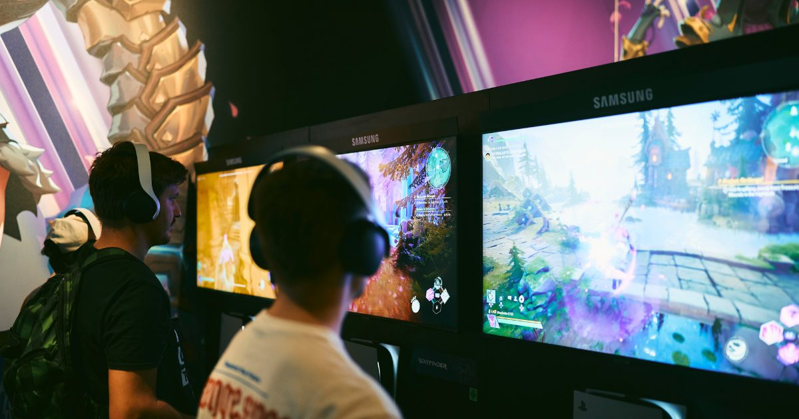

2026-08-13 · 单机前瞻
8 月 25 日，Geoff Keighley 再次站上科隆开幕夜（Opening Night Live）的舞台，今年还拉来了电竞主持 sjokz 搭班，直播时长 2 小时。目前已确认的首批阵容里，最狠的一张牌是：CDPR 要把 2015 年发售的《巫师3》再掏出一部全新大型资料片「旧时曲（Songs of the Past）」。一个 11 岁的游戏还在出新内容，这事本身就够魔幻了。这篇写给两类人——想蹲直播的单机/主机党，以及想知道「二次元新作去哪了」的二游读者。

Gamescom 2026 线下展期是 8 月 26–30 日，地点照旧科隆 Koelnmesse；开幕夜 8 月 25 日先打响，线上在 YouTube / Twitch / Steam 免费直播，入场券早已售罄。值得一提的是，今年展馆历史首次全部预订一空，参展商名单里有 Nintendo、Xbox、Ubisoft、CDPR、Capcom、Krafton、Bandai Namco、Konami——阵容厚度没得说。
目前已官宣登陆开幕夜的游戏：The Witcher 3 资料片「旧时曲」、Final Fantasy VII Revelation、Metro 2039、Silent Hill: Townfall、AION 2、NC 未公开新作 Project Bonfire、Cinder City，以及 Tides of Annihilation。一眼扫过去，关键词是「续作」「资料片」「重制」——清一色已知 IP。
1) 巫师3：旧时曲（Songs of the Past）。这是继《石之心》《血与酒》之后的第三部大型资料片，CDPR 联手 Fool's Theory（一群参与过本体的老兵）开发，2027 年发售，登陆 PC（Steam/GOG/Epic）、PS5、Xbox Series。官方明说体量对标《血与酒》——不是小追加，是货真价实的大扩展。故事放在本篇结局之后，玩家再次扮演杰洛特，被定位成「杰洛特的告别作」，为 2027 年后的《巫师4》（希里主角）做过渡。还有个硬核细节：PC 端最低系统要求直接写成 Windows 11，12GB 内存、6GB 显存、70GB SSD、仅支持 DX12——老机器想跑新 DLC，可能得先升级系统。
2) Final Fantasy VII Revelation。SE 的重制三部曲终章，由导演 Hamaguchi 亲自在开幕夜讲解「New Look」，2027 年春季发售，且首次全平台同步（PS5 / PC / Xbox / NS2），不再有 PlayStation 限时独占。对等了六年的老玩家，这是收官时刻。
3) Metro 2039。开幕夜少数提供「现场可玩 Demo」的硬货，主打沉浸式末世射击，适合现场试手感。
4) Silent Hill: Townfall / AION 2 / Project Bonfire / Cinder City。Konami 的寂静岭新作走预告路线；NC 这边最值得玩味的是 Project Bonfire——一部尚未公布正式名号的未公开新作，要在开幕夜全球首秀，很可能藏大招；AION 2 是 UE5 mmorpg，9/30 创始包、10/5 全球上线，且西方服明说「无随机宝箱、靠外观和会员变现」，算是给被抽卡伤透的玩家递了颗定心丸。
信号一：「老 IP 续命」成了西厂共识。巫师3 在发售 11 年后还出大型资料片，FF7 走到重制终章，Metro、寂静岭都是老树开新花。大厂当下的策略很清楚——与其赌一个全新 IP 的 unknown，不如在已知情怀上加床被子。对玩家是好事（品质有兜底），对行业则是信号：原创新 IP 的容错率正在变低。
信号二：日系二次元去哪了？参展商名单里确实有 SE、卡普空、万代、科乐美这些日本厂，但开幕夜主舞台几乎看不到二游 / anime 向的新预告——日厂把真正的重磅留给了 9 月的东京电玩展（TGS）。所以给站内读者的判断很直接：想看二游新料，9 月 TGS 比科隆更值得蹲；科隆这届，是写给单机 / 主机党的情书。
至于惊喜在哪？开幕夜照例会塞 unannounced 环节，Project Bonfire 这种「未公开新作官宣」就是典型的藏招位。别只看已知阵容，真正能上热搜的，往往藏在最后那段「one more thing」。
我们的评分：7.5 / 10（展会期待值）。扣分在「多是已知 IP 续作、缺全新爆款」，加分在「巫师3 资料片 + FF7 终章」这组双王炸足够情怀拉满。
我们的观察：科隆正在变成「西方大厂的确定性强排期」，而二游 / anime 的发布节奏被 TGS 和各家直播拆走——两个展会的分工越来越清晰。
我们的观点：别熬整夜等「全新二游」。这届是给单机 / 主机党的，想看二次元新作请直接把闹钟调到 9 月 TGS。
我们的案例 / 对比：对比本站此前写的《黑神话：钟馗》8.20 汇报——国产单机也在抢 8 月下旬这个窗口，科隆（8.25）前后中外单机「撞档」，8 月下旬简直是单机党的狂欢月。
我们的实验：我们按北京时差排了一版「熬夜表」：开幕夜是太平洋时间 8/25 11:00，对应北京时间 8/26 凌晨 2:00。巫师3 DLC 首秀与 FF7 展示都在这 2 小时内，想看核心内容的同学定好 02:00 闹钟即可，不必全程死守。
第一，守开幕夜。8/26 凌晨 2:00 开蹲，重点看巫师3「旧时曲」首秀 + FF7 Revelation 的 New Look；Metro 2039 的实机如果放，优先看。
第二，盯 unannounced。Project Bonfire 这类未公开新作，才是这届可能的「惊喜炸弹」，别只盯着已知阵容。
第三，二游党转移阵地。想看二次元 / 手游新情报，9 月 TGS 比科隆香得多，现在先把科隆当「单机情怀补完计划」就好。
官方与信源：Gamescom 官网；开幕夜由 Geoff Keighley 主持，直播见 YouTube / Twitch / Steam。本文为展会前瞻整理，不构成任何购买或预购建议。